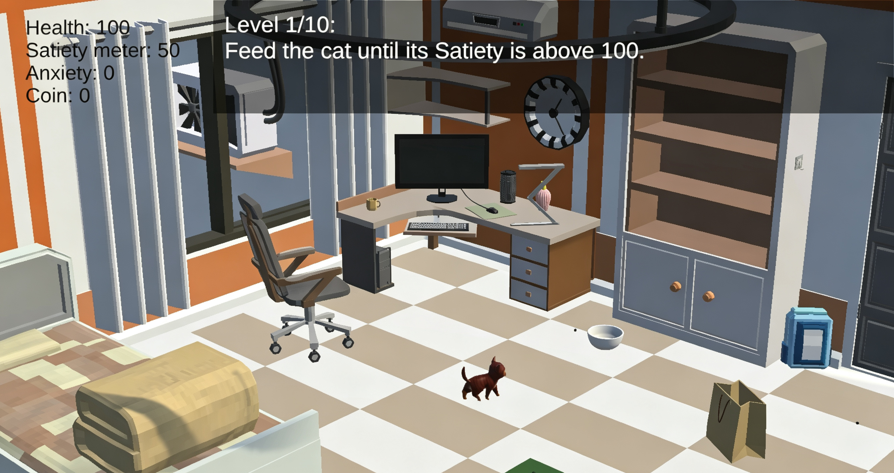
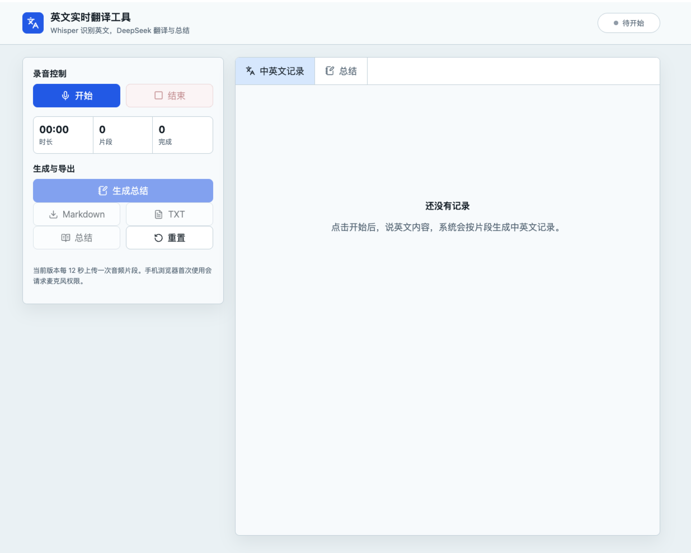
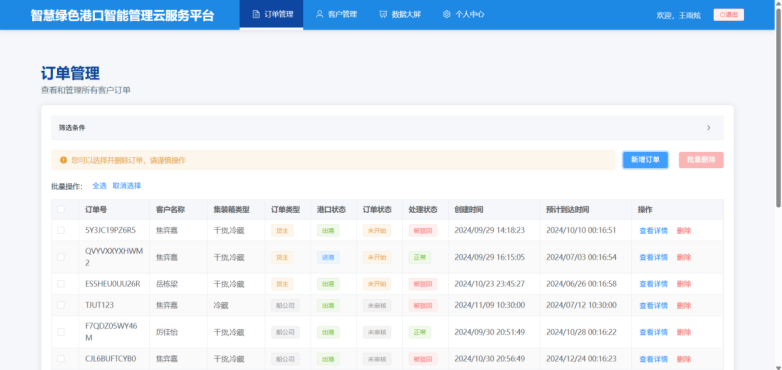
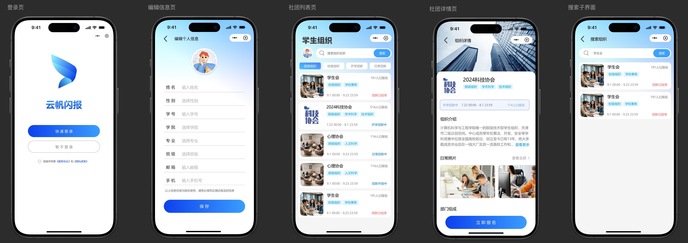

香港中文大学（深圳）
The Chinese University of Hong Kong, Shenzhen
硕士 · 计算社会科学（人机交互方向）
Master · Computational Social Science, Human-Computer Interaction
计算机与计算社会科学交叉背景，关注 AI 产品、人机交互与真实场景之间的连接。
An interdisciplinary background in computer science and computational social science, focused on AI products, human-computer interaction, and real-world applications.
硕士 · 计算社会科学（人机交互方向）
Master · Computational Social Science, Human-Computer Interaction
本科 · 计算机科学与技术
Bachelor · Computer Science and Technology
产品策划实习生 · 腾讯云培训与认证
Product Planning Intern · Tencent Cloud Training & Certification
产品经理实习生 · 团结引擎
Product Manager Intern · Tuanjie Engine
产品经理实习生 · 数据平台部门
Product Manager Intern · Data Platform Department

游戏策划 + 游戏开发
Game Design + Game Development
面向有养猫意愿但暂不具备饲养条件、且缺乏养宠知识的年轻用户，基于 Unity 3D 开发科学养宠模拟游戏，通过情境化任务与行为反馈，让玩家在体验养成乐趣的同时理解基础养护知识。
A Unity 3D science-based cat-care simulation for young users who want a cat but currently lack suitable conditions or practical knowledge. Contextual tasks and behavioral feedback combine the enjoyment of raising a virtual pet with foundational care education.

产品经理 + 前后端开发
Product Manager + Full-stack Developer
面向线下会议场景的实时同声传译 MVP。使用 Gradio 搭建前后端一体化应用，集成 Whisper 实时语音转文字，并调用千问 2.5 完成翻译。
A real-time interpretation MVP for offline meetings, combining Gradio, Whisper speech-to-text, and Qwen 2.5 translation.
查看 GitHub 仓库 View GitHub repository ↗
产品经理
Product Manager
面向港口与交通智慧化场景，建设以云服务平台为核心的智能绿色港口解决方案。
An intelligent green-port solution centered on a cloud platform for port and transportation scenarios.

产品经理
Product Manager
为校内学生组织与新生设计统一的社团展示、报名和面试管理系统，覆盖 B 端组织配置与 C 端学生报名。
A unified club discovery, application, and interview system spanning organization-side configuration and student-side registration.
产品经理 + 产品运营 + 算法设计 + 前后端开发
Product Manager + Product Operations + Algorithm Design + Full-stack Development
面向缺乏口语素材、难以将个人经历转化为英文答案的 IELTS 考生，构建基于开放权重大语言模型的个性化素材生成系统。用户填写目标分数、教育背景、工作经历、兴趣爱好及真实故事后，系统自动将个人信息匹配到不同口语话题，批量生成具有个人辨识度、符合目标难度且便于记忆复述的定制口语素材。
An AI-powered personalized content system for IELTS candidates who lack speaking material or struggle to turn personal experiences into English answers. After users provide their target score, education, work experience, interests, and real stories, an open-weight language model maps that information to speaking topics and batch-generates distinctive, appropriately leveled, easy-to-recall responses.
从用户旅程、需求拆解到原型、PRD 与信息架构。
From user journeys and requirements to prototypes, PRDs, and information architecture.
把大模型能力转化为可控、可验证的产品流程。
Turning model capabilities into controlled and testable product workflows.
理解交互原型到工程实现、数据存储与部署交付的完整链路。
Understanding the end-to-end path from interactive prototypes to engineering, data, and delivery.
项目探索 · 2025.10 至今
Project exploration · Oct 2025 to present
围绕心理咨询训练，运用大语言模型、情绪状态机、FACS 脸孔编码与社交机器人设计虚拟病人。
Designing a virtual patient for psychotherapy training with large language models, emotional state machines, FACS, and social robots.
Q1 · 已录用
Q1 · Accepted
Shuhao Mei, Xin Li, Yuxi Zhou, Jiahao Xu, Yong Zhang, Yuxuan Wan, Shan Cao, Qinghao Zhao, Shijia Geng, Junqing Xie, Shenda Hong
Shuhao Mei, Xin Li, Yuxi Zhou, Jiahao Xu, Yong Zhang, Yuxuan Wan, Shan Cao, Qinghao Zhao, Shijia Geng, Junqing Xie, Shenda Hong
CCF-C · 已录用
CCF-C · Accepted
Zhehao Lin, Chen Dong, Yuxuan Wan
Zhehao Lin, Chen Dong, Yuxuan Wan
CCF-C · 已录用
CCF-C · Accepted
Jiahao Chen, Chen Dong, Yuxuan Wan
Jiahao Chen, Chen Dong, Yuxuan Wan
2025毕业荣誉Graduation Honor
2024校级荣誉University Honors
2024华北赛区省级三等奖Provincial Third Prize
2023国家级一等奖 · 队长National First Prize · Team Leader
2023国家级三等奖National Third Prize
2023省赛银奖 · 队长Provincial Silver Award · Team Leader